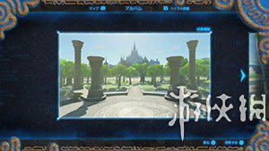
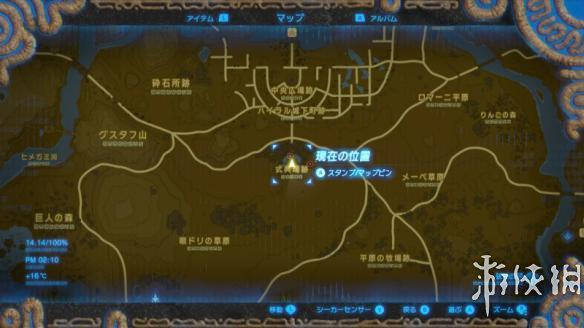
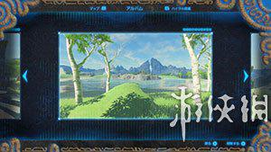
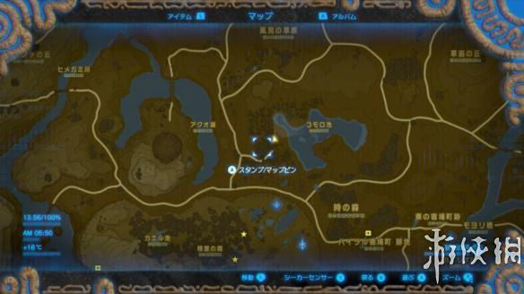

塞尔达传说荒野之息的拍照任务怎么做？想必很多玩家还不是很清楚吧！今天小编就为大家带来照片任务全地点对照，想知道的朋友快来看看吧！
照片任务全地点对照
找到相机后，就会触发主线任务“ウツシエの記憶”，只要找到相片中的地方拍照，就能够回忆起跟塞尔达相关的事情。12个地址随便找到一个之后，找インパ婆婆(カカリコ村里)报告就能够获得本作林克的主打衣服「英傑の服」。
ハイラル平原・ハイラル城前面


ハイラル平原・コモロ池西

